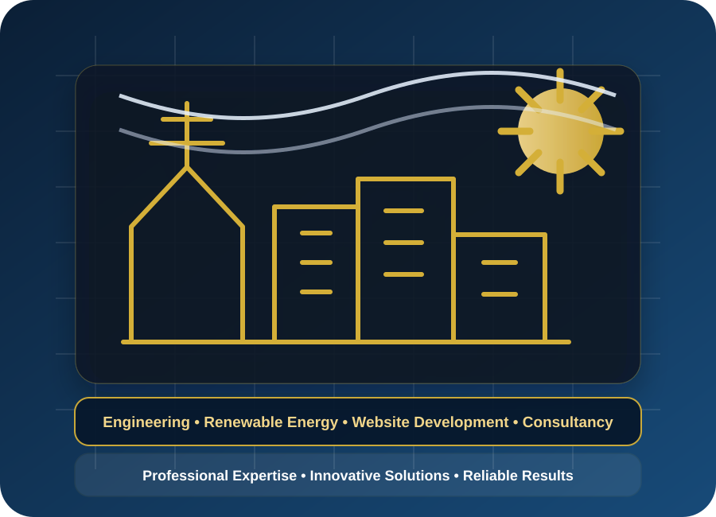

Multidisciplinary Engineering Consultancy
Engineering advisory across mechanical, electrical, civil, structural, industrial and infrastructure-related requirements through experienced professionals and specialist associates.
Executive Engineering • Documentation • Digital Solutions
Providing multidisciplinary engineering consultancy, EPC & tender documentation, technical documentation, AI-enhanced engineering solutions, digital engineering, website development and multilingual technical documentation for clients in Bangladesh and internationally.

About KETC
Kabir Engineering & Technical Consultancy (KETC) supports clients requiring experienced engineering judgement, structured documentation, project advisory, tender support, feasibility analysis and technical communication. The consultancy combines decades of practical engineering and power project experience with modern AI-assisted documentation and digital workflow capability.
KETC focuses on services that clients actively need: engineering consultancy, EPC and tender documentation, technical reporting, AI-enhanced engineering documentation, digital engineering support, website solutions and professional technical localisation.
Core Services
The homepage is intentionally focused on the services most likely to be requested by corporate, EPC, government and international clients. Additional sector-specific support can be provided according to project requirements.
Engineering advisory across mechanical, electrical, civil, structural, industrial and infrastructure-related requirements through experienced professionals and specialist associates.
Preparation and review of tender documents, technical specifications, BOQ, method statements, proposal submissions, contract documents and technical evaluation materials.
Feasibility studies, technical reports, engineering manuals, SOPs, project summaries, executive reports, technical correspondence and presentation materials.
Responsible use of modern AI tools combined with professional engineering judgement, technical validation and quality review to improve documentation quality and productivity.
Corporate websites, technical content, SEO-ready digital presence, data-informed support and digital engineering solutions for consultants, EPC contractors and industrial organisations.
Professional preparation, translation, localisation and quality review of engineering, business and technical documents across multiple languages using expert review and modern AI-assisted workflows.
International Specialist Network
KETC remains primarily an engineering consultancy. Where projects require advanced digital capability, KETC can work with specialist associates, including Australian-based digital and data professionals, to support selected data analytics, AI-assisted workflows, business intelligence and website solutions.
This approach gives clients access to both senior engineering judgement and modern digital execution capability without changing KETC into a conventional IT company.
Why Clients Choose KETC
Decades of practical engineering, power project, EPC and O&M experience.
Services are presented around client demand, not broad generic industry listings.
AI-assisted outputs are reviewed with engineering judgement before delivery.
Reports, proposals and technical submissions are structured for decision-makers.
Additional technical and digital expertise can be engaged when projects require it.
Client documents, project information and commercial details are handled carefully.
How We Work
Understanding your project objectives, urgency and available documentation.
Reviewing scope, risk, documentation requirements and specialist input.
Preparing a customised proposal based on scope, timeline and deliverables.
Executing the agreed service with quality review, revisions and support.
Resource Centre
The KETC Resource Centre will support future articles, technical notes, tender preparation guides, AI in engineering insights and downloadable company profile materials.
Proposal Request Centre
Complete the form below to receive a tailored proposal for your engineering or technical documentation requirements.
All enquiries are treated with strict confidentiality. We typically respond within 1–2 business days.